Audiobooks
Organize by author, series, genre, or custom libraries.
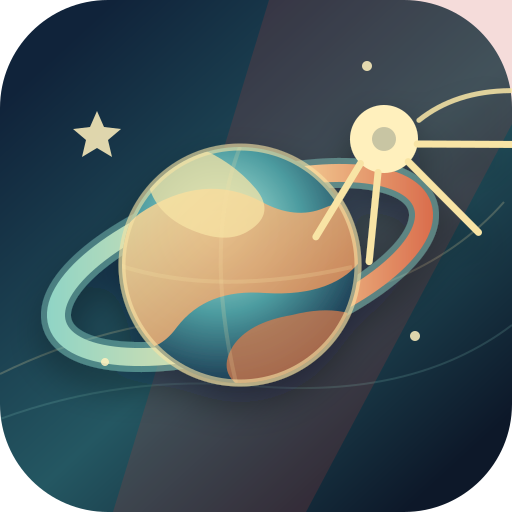
isputnik GitHubOpen source · Self-hosted
Your family's media library, under your own roof. Audiobooks, ebooks, photos, and videos — served from your home, for the people you trust.
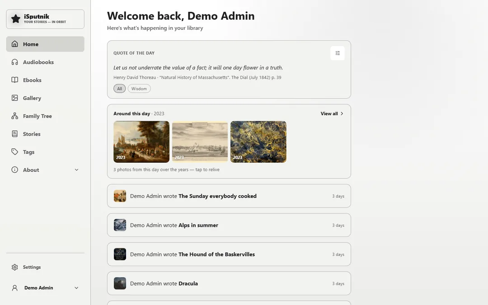
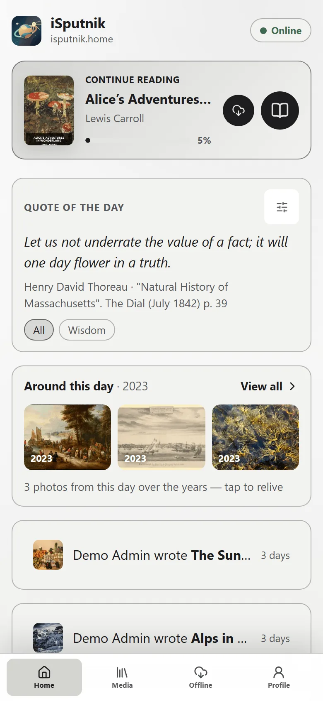
Your server
Self-host your books, photos, videos, and family history under your own control.
One home
Audiobooks, ebooks, Gallery, Stories, and Family Tree together in one place.
Pick up where you left off
iSputnik remembers audiobook and EPUB progress for each user.
Private by design
Private libraries, granular permissions, and optional multi-factor authentication.
Listen anywhere. Pick up where you left off. All in one place.
Organize by author, series, genre, or custom libraries.
Each audiobook has its own page with details.
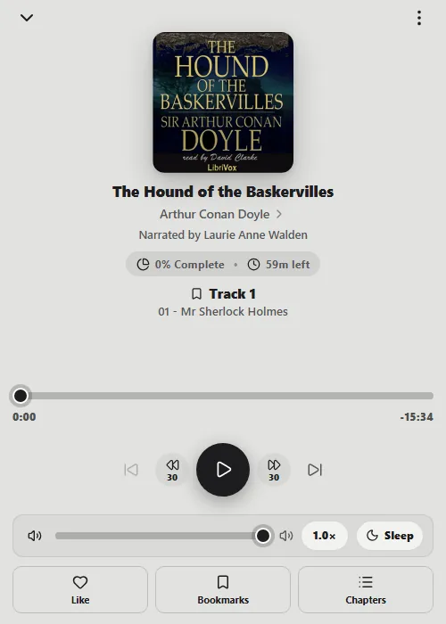
Listen with built-in playback controls.
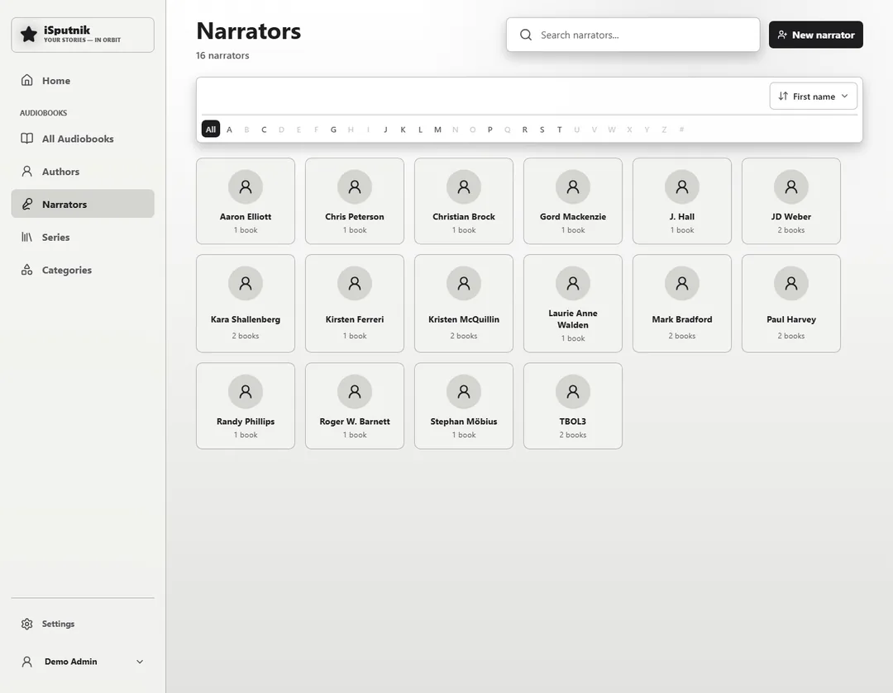
Every reader is a person you can browse to.
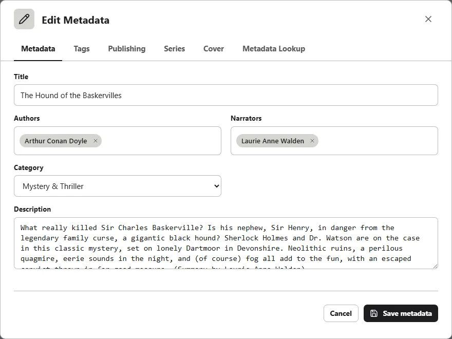
Edit titles, people, series, covers, and tags by hand.
Photos & videos
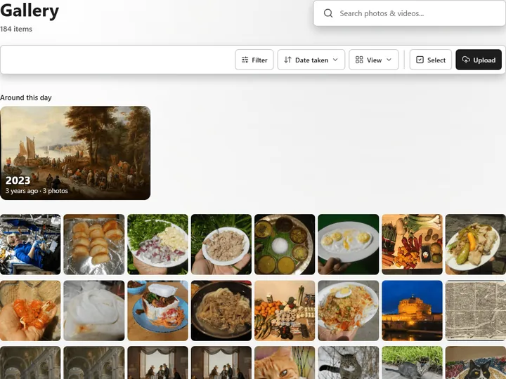
Point it at the folders you already have and the whole library runs as one continuous grid, at the tile size you like — or group it by day instead. Nothing is copied or moved.
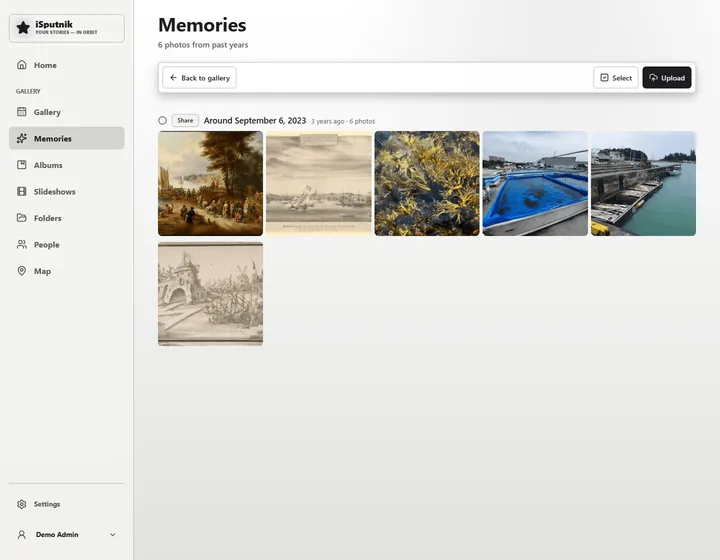
The same day in earlier years comes back on its own. No album to build and nothing to tag: it is simply there when you open the app, counted in years rather than dates.
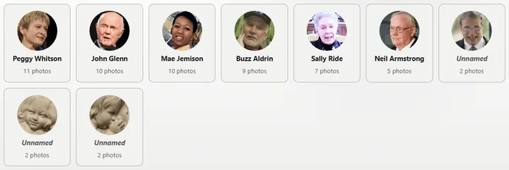
Turn it on for a library and a background job finds faces and gathers them into people. Name the ones who matter and the name sticks. The models ship with the app; not one pixel is sent anywhere.
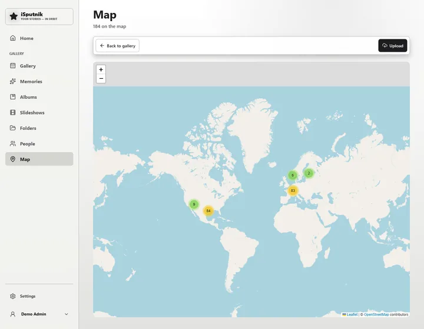
Anything with a location joins the map, gathered into clusters until you zoom close enough to tell them apart. Photos without one can be placed by hand — search for the town, drop a pin, done for the whole batch.
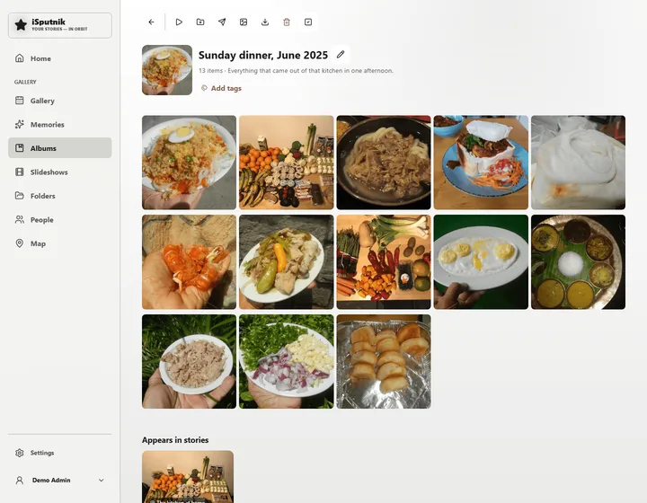
An album is a set you choose, kept apart from the dates. It can carry its own cover, feed a story, or become the source of a slideshow.
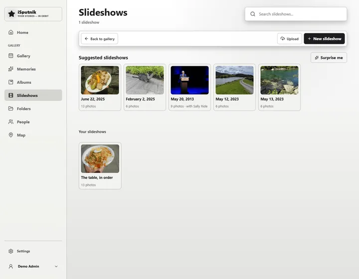
Choose a transition, lay your own music under it, and render a real 1080p movie in the background — the file lands back in the gallery. The server suggests slideshows on its own too: a day with a lot of photos, or everything with one person in it.
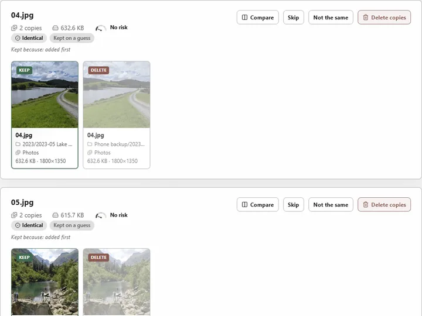
Phone backups run twice. A cleanup finds the copies, says which one it would keep and why, and lets you work through the list at your own pace. Everything removed goes to the Recycle Bin, not to oblivion.
Stories & family
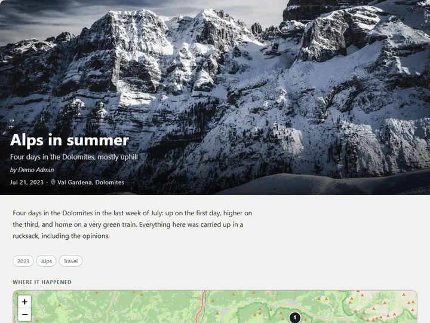
A page you write yourself — your words, with the photos, the album, the map of the route, a person from the family tree, a quote — placed where they belong in the telling. One scrollable page, or a chapter per day.
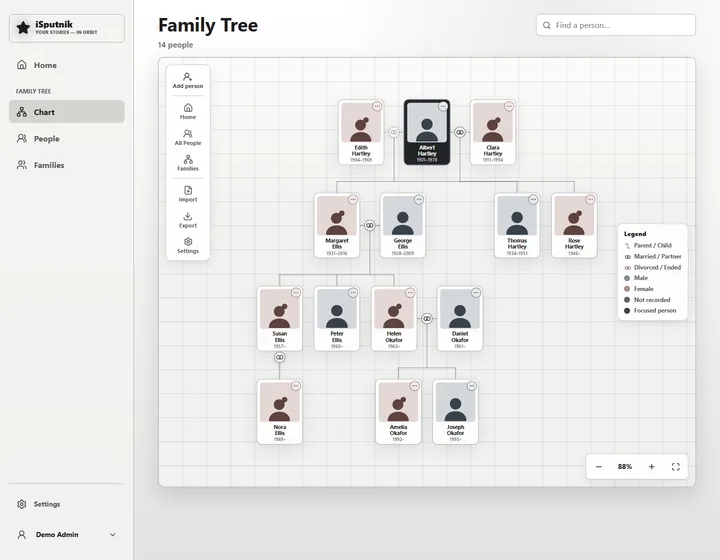
Parents above, children below, partners alongside. Second marriages, adoptions and half-siblings drawn the way they were. GEDCOM in and out, so nothing is locked in.
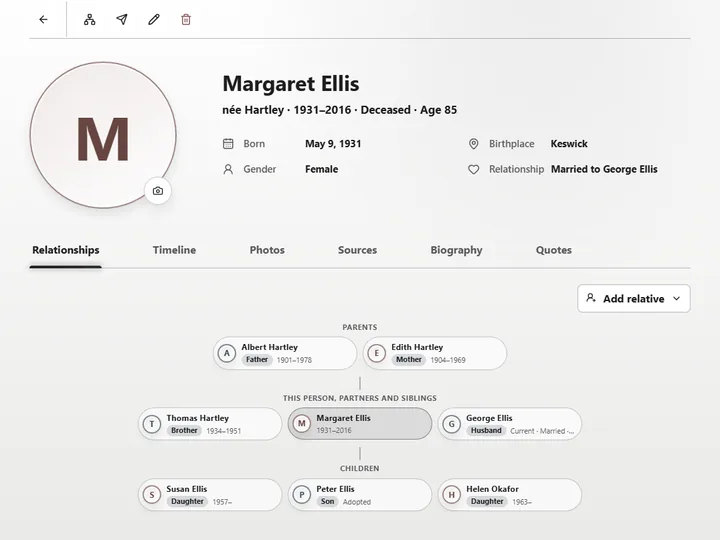
Every person has a page: their relationships, a timeline, their photos, the things they said. The people the gallery found can be linked straight to their place on the tree.
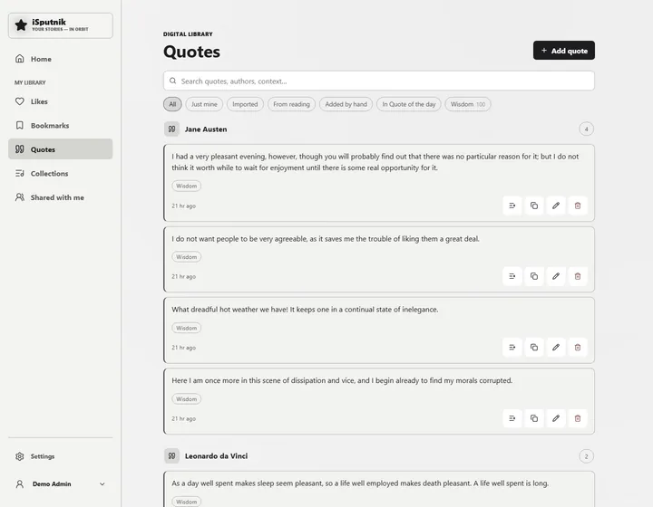
Something worth keeping from a book, a person, or anywhere. Captured from the reader with the page remembered, or typed in by hand. One comes back each morning on the home page.
Themes
Selection: Minimalist The default. Platinum grey and black ink, like a certain beige computer.
Security
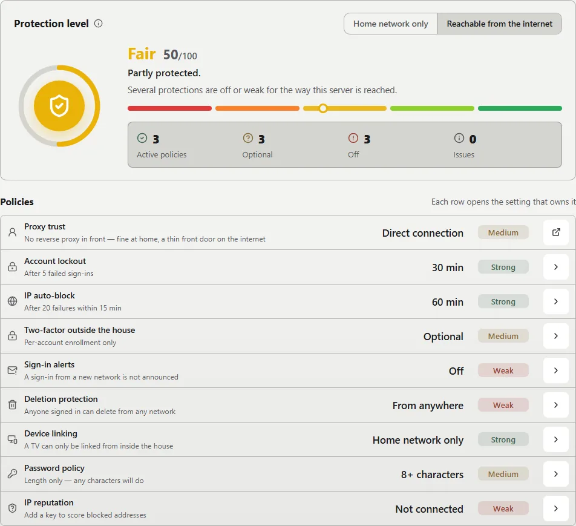
One page scores the whole install out of 100 and grades every policy behind the number. Each row opens the setting that owns it, so raising the score is a matter of working down the list. The pieces are the ones a bank uses, sized for a household.
An authenticator app or an emailed code, and passkeys for the people who have them. It can be required only from outside the house.
Repeated failures lock the account and, if they keep coming, block the address. Rate limits and a strict Content Security Policy sit underneath.
Your own network is known. Anything from outside it is held to a stricter standard, and deleting can be limited to home.
An email to the admin when a sign-in comes from somewhere new, and a full activity log to check afterwards.
Yours. Really.
Backups you can download and restore anywhere, on a nightly schedule if you like. A Recycle Bin for everything deleted. Runs in Docker or from the Unraid app store, and the source is yours to read.